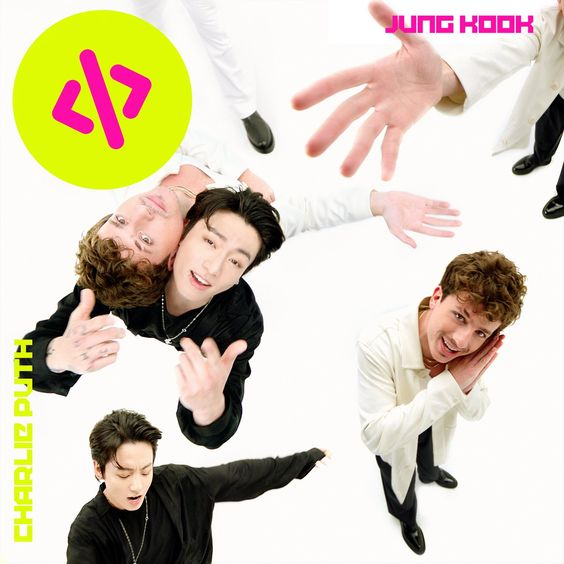
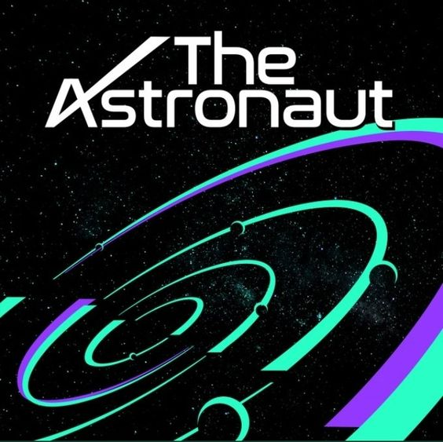
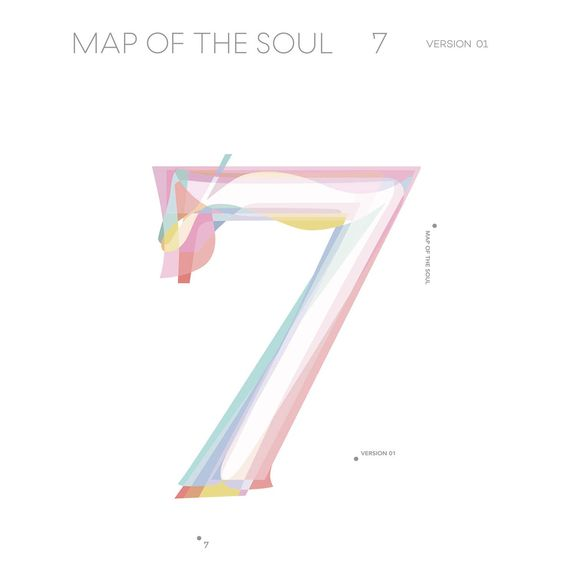
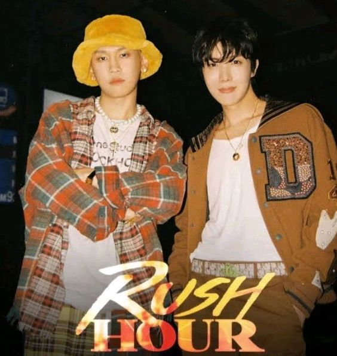

ALBUMES

Filtrar
-

BAD DECISIONS
Malas decisiones
"Bad Decisions" ("Malas decisiones" en español) es una canción del productor discográfico estadounidense Benny Blanco, la boy band surcoreana BTS y el rapero estadounidense Snoop Dogg. Fue lanzada a través de Interscope Records, Friends Keep Secrets y Joytime Collective como sencillo el 5 de agosto de 2022. La canción fue descrita como "un tema eufórico y coqueto de música de baile, en el tema los miembros de BTS y a Snoop hablan sobre un ser querido con el que quieren pasar tiempo.$55.000
-

LEFT AND RIGHT
Jungkook
«Left and Right» es una canción del cantante estadounidense Charlie Puth con Jungkook de BTS, lanzada a través de Atlantic Records el 24 de junio de 2022, como el tercer sencillo del próximo tercer álbum de estudio de Puth, Charlie. Fue coescrito por Puth y Jacob Kasher Hindlin, y el primero también se desempeñó como productor. Disponible digitalmente y como un sencillo en CD de edición limitada, el dúo marca la segunda vez que Puth y Jungkook colaboran desde su interpretación de «We Don't Talk Anymore» en los Genie Music Awards en 2018.$40.000
-

PROOF
BTS
Proof es el primer álbum antológico del grupo surcoreano BTS, que fue lanzado el 10 de junio de 2022 a través de Big Hit Music.$145.000
-

THAT THAT
SUGA
«That That» es una canción grabada e interpretada por el cantante surcoreano PSY, junto con el rapero surcoreano Suga de la banda BTS, como parte de su octavo álbum de estudio Psy 9th. La canción fue escrita y producida por PSY y Suga.$45.000
-

THE ASTRONAUT
JIN
JIN de BTS publica The astronaut como su trabajo más especial en solitario antes del servicio militar. Proyecto co-escrito junto a Coldplay.$174.000
-

MOST 7
BTS
Map of the Soul: 7 es el cuarto álbum de estudio (séptimo en total) del grupo surcoreano BTS. Fue lanzado el 21 de febrero de 2020 por Big Hit Entertainment en cuatro versiones diferentes, como continuación del EP de 2019 Map of the Soul: Persona. El Álbum ha sido descrito como un disco pop, R&B y hip-hop con influencias del rock, trap y EDM.Líricamente, toca temas de reflexión, introspección y autoaceptación.$177.000
-

YOU NEVER WALK ALONE
BTS
Wings es el segundo álbum de estudio del grupo surcoreano BTS, publicado el 10 de octubre de 2016 por el sello Big Hit en cuatro versiones diferentes —W, I, N y G— y con un total de quince temas, siete de los cuales eran canciones en solitario de cada uno de los miembros.Una reedición, llamada You Never Walk Alone, salió a la venta el 13 de febrero de 2017, en la que se incluyeron tres temas nuevos.BTS se inspiró en la novela de aprendizaje Demian de Hermann Hesse para desarrollar el concepto del disco,que se centra principalmente en la tentación y el crecimiento, además de abordar, en menor medida, la salud mental y el empoderamiento femenino.$148.000
-

RUSH HOUR
J-HOPE
El 22 de septiembre a las 18 h. KST, Crush lanzó su nuevo sencillo “Rush Hour” con J-Hope de BTS. Inmediatamente después de su lanzamiento, la canción se disparó al número 1 en la lista en tiempo real de Bugs en Corea y también subió a la cima de las listas de iTunes en muchos países del mundo.$45.000
-

2 COOL 4SKOOL
BTS
2 Cool 4 Skool es el sencillo debut de la boy band surcoreana BTS. Fue publicado el 12 de junio de 2013.$98.500
| # | Producto | Cantidad | Precio unitario | Subtotal |
Total a pagar es: